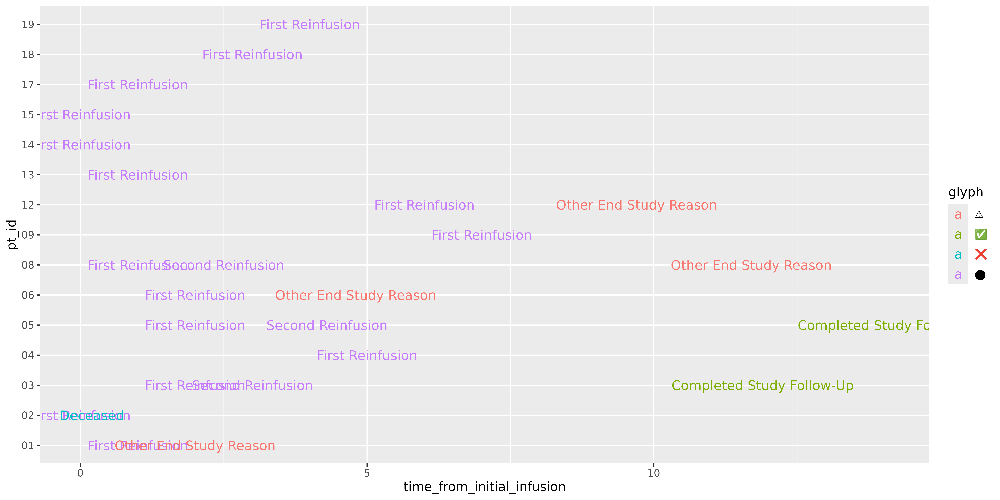
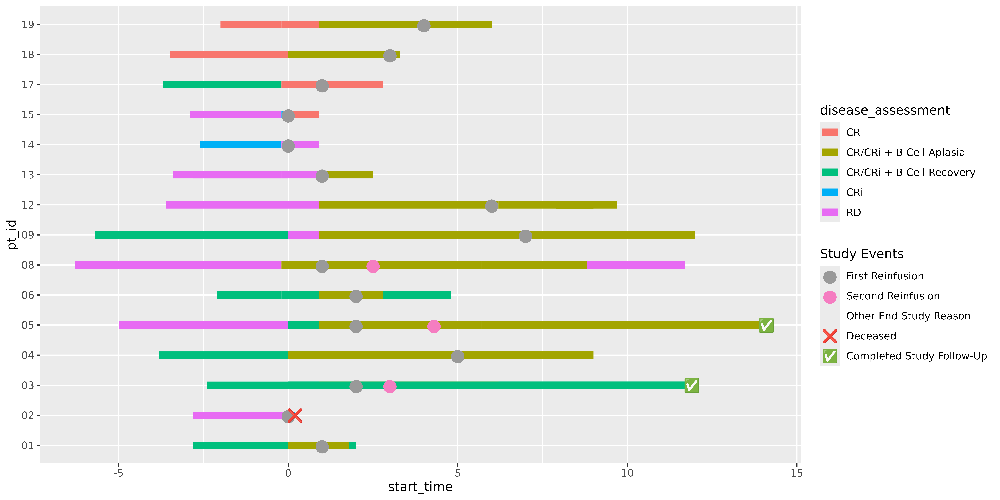

The ggswim package eases the development of swimmer plots in R through extension of ggplot2. In this vignette, we’ll walk through how users can create visually striking swimmer plots.
ggswim offers several layering functions that mimic other “geom” functions from ggplot2:
The former, an extension of geom_segment(), allows users
to construct the horizontal bars, what we’ll sometimes refer to as
“lanes.” Meanwhile, geom_swim_marker() wraps
geom_text() to effortlessly embed key events of interest,
or “markers,” onto the lanes. These can take the form of shapes,
symbols, or even emojis.
Drawing from the well-established principles of ggplot2, ggswim
allows users to apply familiar layer-building techniques, including the
application of styles and themes. You’ll also see that common behaviors
are still accessible with ggswim such as auto-completing
aes() parameters with piping.
Adding a Lane Layer
Let’s get started building our swimmer plot! As with the README, we
will be using ggswim’s internal datasets: patient_data,
infusion_events, and end_study_events.
Let’s start with observing patient_data’s structure:
patient_data contains a long pivoted dataset where
patient ID’s (pt_id) can be repeated. These rows are
differentiated by disease_assessmentss combined with
corresponding start and end times, representing months. Together, these
rows signify a patient survival timeline.
-
disease_assessmentis broken down by the following nomenclature along with some indicator of B-cell status (if applicable):- CR = “Complete Response”
- CRi = “Complete Response with Incomplete Blood Count Recovery”
- RD = “Relapsed Disease”
Now, let’s make the plot using ggplot() and our first
layer with geom_swim_lane():
library(ggplot2)
p <- ggplot() +
geom_swim_lane(
data = patient_data,
mapping = aes(
x = start_time,
xend = end_time,
y = pt_id,
color = disease_assessment
),
linewidth = 3
)
p
Here we have a simple segment graph, showing infusions grouped by
patients with a given disease assessment status.
geom_swim_lane() does the work of setting up
geom_segment() and readying our plot layers for additional
ggswim-specific features such as the “markers” mentioned earlier. It’s
worth noting that geom_swim_lane() is a very thin wrapper
around geom_segment() and supports the same functionality
apart from a yend.
Adding a Marker Layer: Points
Now, let’s add a marker layer by first inspecting the
infusion_events and end_study_events
datasets:
infusion_events |>
rmarkdown::paged_table()This dataset is much simpler, indicating the time from the initial
infusion, where 0 is an initial infusion and reinfusions at some point
beyond 0 (if a patient had any). These are also categorized under
label. glyph and colour will
serve as helpful specifiers when we add our markers onto our swimmer
plot.
Next, let’s look at our end of study events, i.e. events that indicate a patient has left the study for various reasons.
end_study_events |>
rmarkdown::paged_table()You’ll notice that this dataset includes use of emojis under
glyph. In addition to shapes and symbols, ggswim supports
the use of emojis when rendering swimmer plots. If issues arise in rendering, you may need to check
your options settings and ensure a proper graphics device like
“AGG”.
While it’s common to encounter these as separate datasets in the
wild, it will make our lives much easier to combine
end_study_events and infusion_events together
since they share roughly the same data structure and the markers exist
on the same timeline.
all_events <- dplyr::bind_rows(
infusion_events,
end_study_events
)
all_events
#> # A tibble: 25 × 5
#> pt_id time_from_initial_infusion label glyph colour
#> <chr> <dbl> <chr> <chr> <chr>
#> 1 01 1 First Reinfusion ⬤ #999999
#> 2 02 0 First Reinfusion ⬤ #999999
#> 3 03 2 First Reinfusion ⬤ #999999
#> 4 03 3 Second Reinfusion ⬤ #f57dc1
#> 5 04 5 First Reinfusion ⬤ #999999
#> 6 05 2 First Reinfusion ⬤ #999999
#> 7 05 4.3 Second Reinfusion ⬤ #f57dc1
#> 8 06 2 First Reinfusion ⬤ #999999
#> 9 08 1 First Reinfusion ⬤ #999999
#> 10 08 2.5 Second Reinfusion ⬤ #f57dc1
#> # ℹ 15 more rowsLet’s now call geom_swim_marker() and add the events
onto our plot. To do this, we will use geom_swim_marker()’s
custom marker aes() parameter:
p <- p +
geom_swim_marker(
data = all_events,
aes(
x = time_from_initial_infusion,
y = pt_id,
marker = label
),
size = 4
)
p
We’ve successfully made a swimmer plot with lanes and two different
kinds of marker layers! Notice how even though both the lanes and
markers use the color scale, they are separated in the legend output.
Let’s take it one step further and make use of the glyph
and colour columns we specified. After all, who doesn’t
love some emojis?
A Sense of Scale
scale_marker_discrete() makes it easy to specify and
take finer control over your markers and their appearance in the legend.
Typically, it can be difficult to have emojis or labels appear in the
place of legend glyphs. Let’s take a look at a typical output using base
ggplot2 with geom_text():
ggplot() +
geom_text(
data = all_events,
aes(x = time_from_initial_infusion, y = pt_id, label = label, colour = glyph),
size = 4
)
geom_text() does a decent job, and is actually what
geom_swim_marker() wraps. However, at it’s base level it
doesn’t quite set up the use of glyphs the way we would like to see them
in the legend display. Additionally, those glyphs don’t appear in the
plot. You could try to rework this with geom_point() or
geom_label(), but would still run into issues with scale
assignment.
Thanks to ggswim we can specify what belongs in the glyph versus text
elements of our legend. Additionally, we are able to use the “colour”
scales under the marker definition so ggswim can use the
same colour scale under the hood, but keep the identity of “markers” and
“lanes” separate in the output:
p <- p +
scale_marker_discrete(name = "Study Events",
glyphs = all_events$glyph,
colours = all_events$colour,
limits = all_events$label)
p
A Full Swimmer Plot
As mentioned in the README, all of the same ggplot2 techniques you would apply to your usual plots apply here. Below, we update the lanes to match a nicer pallete with a new name and add on some plot labels:
library(ggplot2)
p <- p +
theme_minimal() +
scale_color_brewer(
name = "Disease Assessments",
palette = "Set1"
) +
labs(title = "My Swimmer Plot") +
xlab("Time (Months)") + ylab("Patient ID")
p
We can also apply the theme_ggswim() function:
p +
theme_ggswim()
Additional notes
Some additional considerations to keep in mind when working with ggswim:
- Rendering Emojis and Custom Shapes: To ensure emojis and other custom shapes display correctly, users may need to switch their graphics rendering device to AGG.